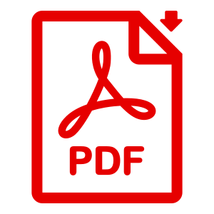

Cedric Bonjour
Strategy Consultant & Software Engineer

EDUCATION
Ongoing
Advanced Master
Strategy & Management of International Business
Through this degree, ESSEC gives its students the core knowledge required for high responsibility positions in a multinational business environment. Having taken the consulting track, I covered additional material with a strong focus on business case problem solving.
Material Covered:
- Finance
- Accounting
- Cost Analysis
- Strategic Marketing Management
- Design Thinking
- International Business Law
- Geopolitics
- Negotiation
- Disruptive Technologies & Innovation
December 2017

Bachelor of Software Engineering
This degree covers a broad range of technical material giving the ability to understand and develop complex software systems of any kind. Project management skills were also a key focus of the program.
Material Covered:
- Artificial Intelligence
- Robots & Intelligent Systems
- Computer Vision
- Database Systems
- Software Validation
- Parallel Computing
- Advanced Mathematics
- Agile & SCRUM methodologies
- Digital System Design Principles & Methods
Degree.pdf Transcript.pdf
CERTIFICATES
August 2020

Data Science Specialization
The Data Science Specialization covers the concepts and tools for
an entire data science pipeline. Successful participants learn how
to use the tools of the trade, think analytically about complex
problems, manage large data sets, deploy statistical principles,
create visualizations, build and evaluate machine learning
algorithms, publish reproducible analyses, and develop data
products.
Material Covered:
- R Programming
- Getting and Cleaning Data
- Exploratory Data Analysis
- Data visualization tools
- Statistical Inference
- Regression Models
- Practical Machine Learning
Certificate.pdf
PROFESSIONAL EXPERIENCE
March 2018
April 2019
R&D Computer Vision
Software Engineer
Surys offers hologram based, anti-counterfeiting solutions, worldwide.
As part of the software R&D department, my main purpose was to research and design hologram authentication algorithms using computer vision and machine learning techniques. I also mentored a engineering master’s student through his final year internship at SURYS.
My most noticeable accomplishment was to successfully tightened SURYS’ relationship with Keesing, SURYS’ Dutch subsidiary, as I took part in defining their business strategy.
https://surys.com/
Jully 2017
August 2017
Database Mission
Software Engineer
I developed software routines to transfer and format data from one database to another.
December 2015
August 2016
Student startup
Gift card e-commerce
Full-stack web developer
Givee is an on-line gift platform start-up. As a team of five, we took Givee from an idea to a registered company with a functional website:
https://www.givee.co.uk
May 2015
December 2015
Database setup & VBA expert
Internship
I managed the integration of a new database in a department. This included supervising the subcontracted development work, performing data migrations, and training future users. In additionI provided support for any heavy Excel workload requiring VBA expertise.
https://www.airbus.com/helicopters.html
ACHIEVEMENTS & POSITIONS OF RESPONSIBILITY

Certificate
in Advanced English
2012
PMI-PDN
(Majoré)
2012
Over a 2 week training program, I impersonated a soldier of the French Air Force. Succeeding in this experience required strong resilience, mentally and physically. I particularly distinguished myself through my subordination and leadership skills.
Certificate.pdf
Model United Nations
Student Director
2013
The point of MUN is to debate global, political issues following the formalities and rules of the UN. Delegates/Students are assigned countries along with a topic to research. Policy proposals are made by the most experienced delegates under the form of resolutions which are then debated in committee.
I was Student director of my high-school's club and organized a conference of 300 participants.
I also participated to major world wide conferences:
- THIMUN (3000+ participants)
- PAMUN (1000+ participants)
Prévention & Secours
Civiques 1
2012
SPORTS & HOBBIES
Coding
Open Source Projects
CONTACT